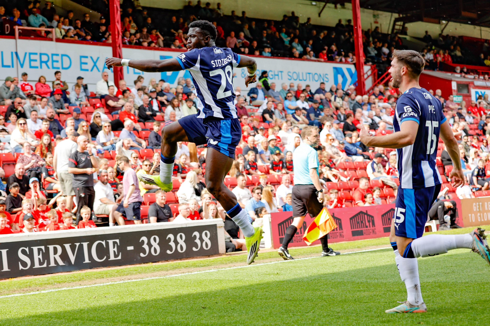
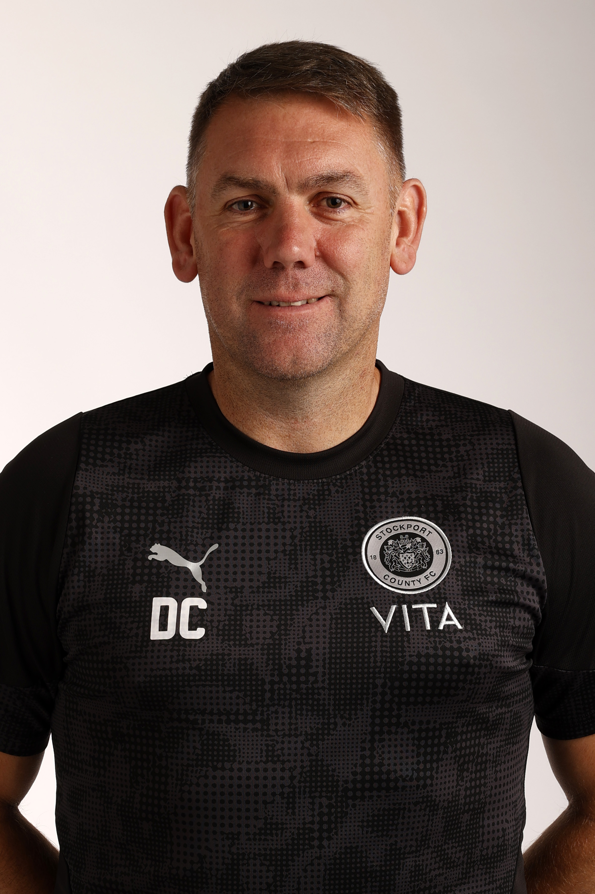
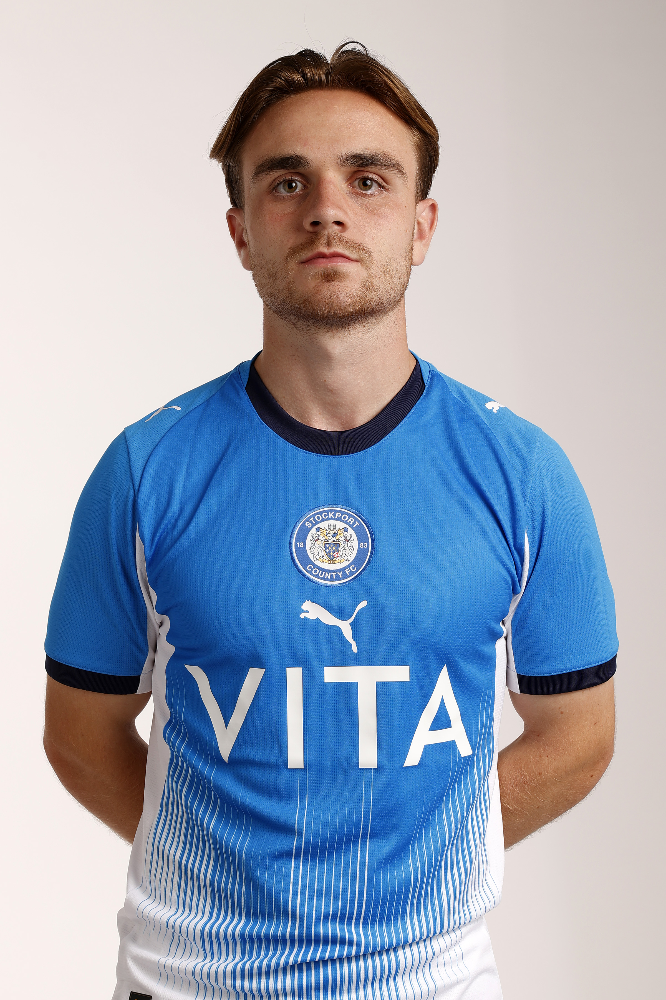
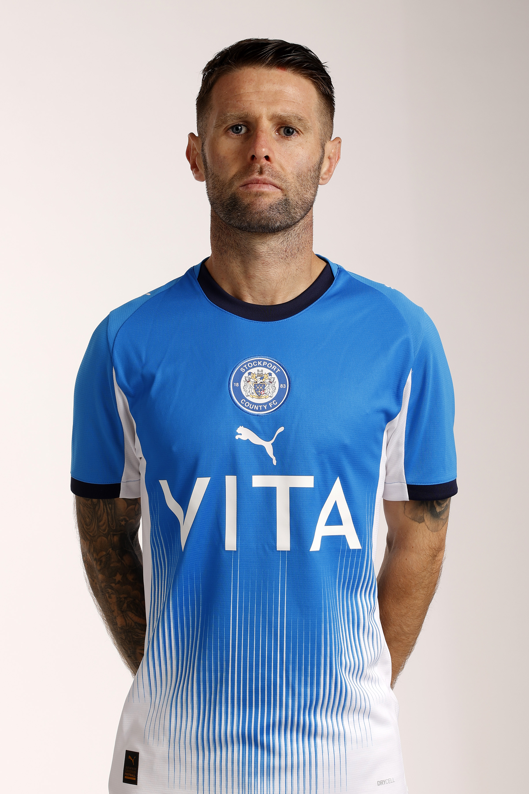
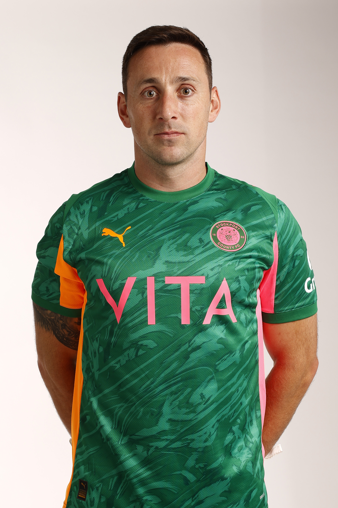

下一场
斯托克波特郡 vs 对手待定
赛事待确认 · 北京时间待定
请以俱乐部官方赛程为准。

Match Centre
我们的下一场比赛将要迎战：
赛事待确认 · 北京时间待定
请以俱乐部官方赛程为准。
News

置顶新闻
主页会显示一条置顶新闻和两条最新发布内容。
阅读全文Club Profile
斯托克波特郡足球俱乐部成立于 1883 年，主场埃奇利公园位于斯托克波特社区中心。球队昵称为 The Hatters，队徽、蓝白主色和本地身份紧密相连。
英格兰历史悠久的职业足球俱乐部之一。
长期承载球队主场比赛和本地球迷文化。
呼应斯托克波特的制帽工业传统。
History
俱乐部最早以 Heaton Norris Rovers 的身份起步，1890 年改名为 Stockport County。长期以来，球队与埃奇利公园、斯托克波特社区和蓝白传统互相塑造。
Squad
主页展示主教练、队长和副队长。完整一线队名单可进入阵容页面查看。

Dave Challinor 主教练球队长期建设的核心人物，负责一线队战术、训练与比赛管理。

Lewis Bate 队长 · 中场技术型中场，擅长在中路接应、转移和向前输送，是球队中场节奏的重要连接点。

Oliver Norwood 副队长 · 中场经验丰富的中场指挥者，长传、定位球和比赛阅读能力突出。

Ben Hinchliffe 副队长 · 门将经验丰富的门线守护者，是球队后场稳定性的重要来源。
County Store
官方 County Store 提供球衣、训练服、围巾、帽子、复古系列和纪念品。中文页只做介绍与跳转，购买流程在官方商店完成。